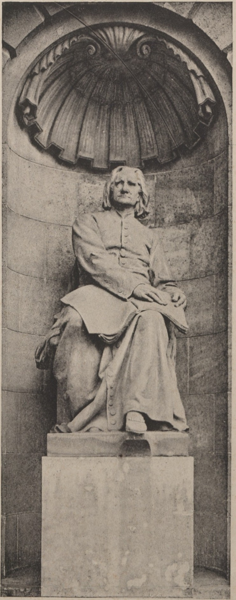

| type | statue |
|---|---|
| name | Liszt Ferenc (seated) |
| wall | W0_24 |
| position | [47.297, -37.693, 1.2] |
| size | [1.6, 1.2, 2.6] |
| confidence | B |
| notes | Strobl Alajos, limestone; head lost to a hit in WWII and restored (S14); right of entrance per S19 (C) |
| sculptor | Strobl Alajos |
| material | limestone |
| sources | S14: Szobrok az Operaház homlokzatán (opera.hu) S15: Magyar Állami Operaház — hu.wikipedia S19: A View on Cities: State Opera House |

# Liszt Ferenc — seated statue (ST_LISZT) - Subject: Liszt Ferenc (1811–1886), seated, in an abbé's cassock, book/score on the lap, right hand resting on it (S23 photo). - Sculptor: Strobl Alajos; commissioned c.1882 (S14, S18 comment); limestone (S14). - Position: niche right of the main entrance as seen from Andrássy út (S19, single source → C); niche with shell half-dome, statue on a plain rectangular plinth (S23). - Liszt and Erkel reportedly sat for the sculptor themselves (search summary of S14; verify in Szvoboda 2007). - History: head shot off in WWII and restored (S14). Today: restored figure in place (not independently dated). - Size: seated figure ≈ 2.6 m incl. plinth top (model C; estimated from niche height on S23 vs niche 4.2 m). - 3D: placeholder figure in the viewer (D). A 2.5D relief needs a clean cut-out of S23 (background is the niche stone → manual masking or a background-removal tool); not made, to avoid presenting a guess.